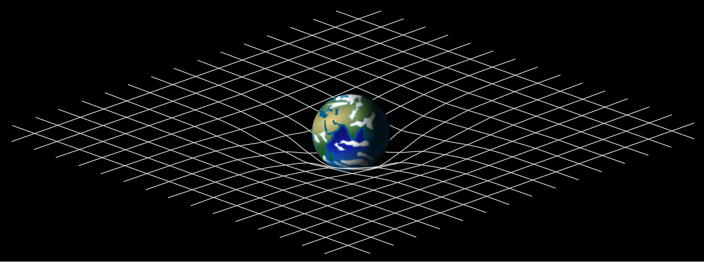
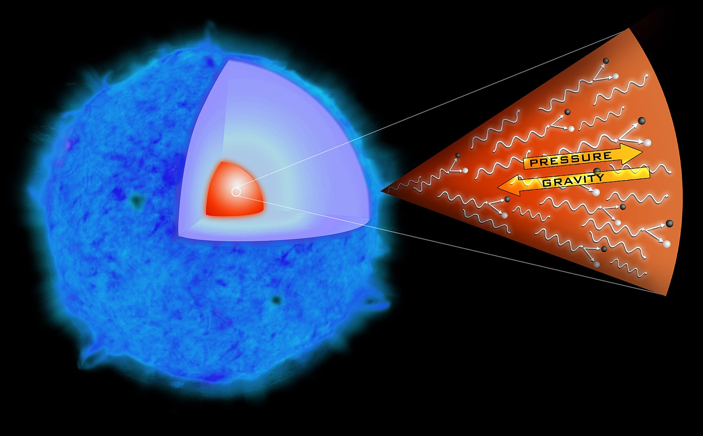

What are black holes?
Black holes are regions of space-time caused when a massive body becomes so dense that the surface gravity of the body causes the escape velocity to exceed the speed of light. As nothing can travel faster than light, this creates a region of spacetime where things -- like matter and energy -- can enter, but nothing can leave.
For the longest time, black holes were seen as possibly only theoretical. However, today, we have observed and studied extensively dozens of these objects, cataloging extremely compelling observational evidence for these object's existence.
How were black holes discovered?
Black holes were first predicted in 1915 by Karl Schwartzchild, a German physicist, using Albert Einstein's Theory of General Relativity, published earlier that year. Schwartzchild's solution to the Einstein Field Equations created a singularity at the very center of a non-spinning, non-charged black hole. This was poorly-understood at the time, but it was later realized that this object would have an event horizon -- the key property of what we today call black holes.
For more on the history of black holes, see the history page.

How do black holes form?
Lower-mass black holes, about 3-100 masses of the sun, are thought to form when extremely massive stars, dozens or even hundreds of times as massive as the sun, reach the ends of their lives. Dying in supernovae, their cores remain, and collapse into stellar-mass black holes. Other types of stellar remnants, like white dwarfs and neutron stars, also can be produced, but generally by stars too small to form a black hole.
Larger black holes, known as intermediate mass black holes, are today something of an enigma. There is currently no obvious mechanism by which these can form, leading to multiple theories, including some about black hole mergers, and others about stellar collisions causing collapse into these objects. Whatever the mechanism is, though, intermediate mass black holes are dwarfed by the last category of black holes, known as supermassive black holes.
Supermassive black holes, like Sgr A* at the center of the Milky Way Galaxy, are extremely large black holes, with masses on the order of millions to billions of times the mass of the sun. These objects are primarily found at the cores of galaxies, spawned by the extreme conditions present in the very centers of galactic structure. They have been showed to possibly be formed as the result of direct collapse of extremely large amounts of material, but may also have been formed by extremely massive 'quasi-stars' in the early universe, and only grown since. Another theory posits that they are instead primordial black holes: objects dating all the way back to the Big Bang itself and therefore the oldest objects in the Universe.
See here for more information on how we model and understand these systems.